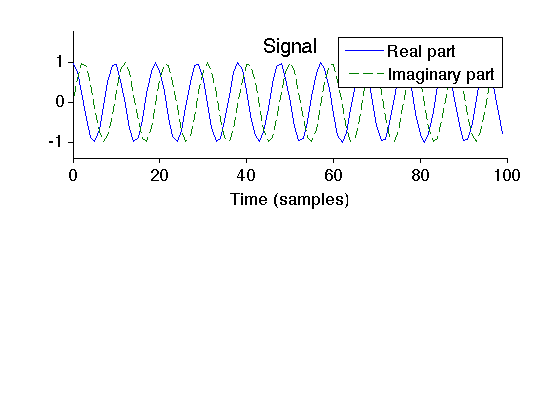
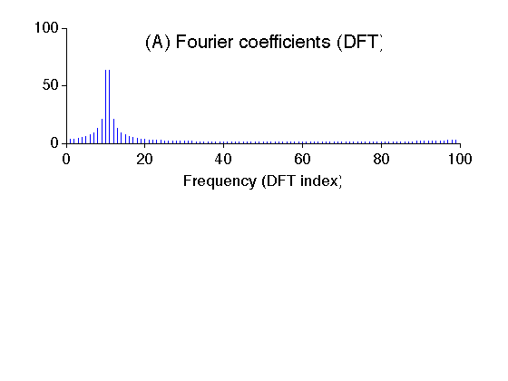
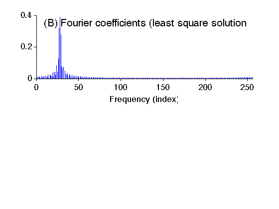
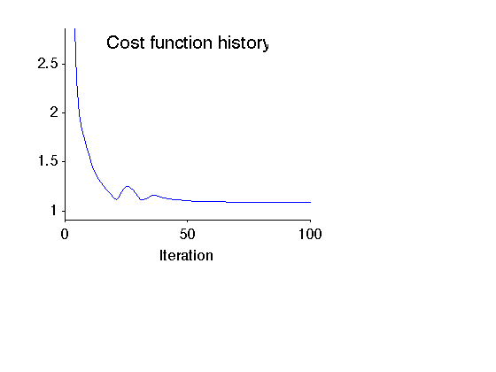
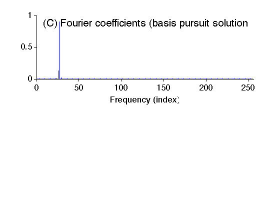

Example: Basis pursuit (BP)
In this example, we obtain frequency-domain coefficients of a sinusoid using three methods:
- Discrete Fourier transform (DFT)
- Oversampled DFT (least square solution)
- Oversampled DFT (basis pursuit solution)
As illustrated in the example, the coefficients obtained using basis pursuit are sparse and do not exhibit the leakage phenomenon.
Ivan Selesnick NYU-Poly selesi@poly.edu March 2012
Contents
Start
close all clear MyGraphPrefsON I = sqrt(-1); printme = @(txt) print('-deps', sprintf('figures/Example_BP_%s',txt));
function 'A'
The function 'A' maps an N-point coefficient vector c to an M-point signal y (where M <= N).
type A
function y = A(c, M, N)
v = N * ifft(c);
y = v(1:M);
end
function 'AT'
The function 'AT' maps an M-point signal y to an N-point coefficient vector c (where M <= N). 'AT' is the complex conjugate transpose of 'A'.
type AT
function c = AT(y, M, N)
c = fft([y; zeros(N-M, 1)]);
end
Perfect reconstruction
Verify the perfect reconstruction property of A and AT. (Show that A*AT = N*identity)
M = 100; N = 256; y = rand(M,1); c = (1/N)*AT(y, M, N); y2 = A(c, M, N); recon_err = y2 - y; % recon_err : reconstruction error fprintf('Maximum reconstruction error : %g\n', max(recon_err))
Maximum reconstruction error : 4.44089e-16
Create signal
The signal consists of 100 points of a complex sinusoid.
M = 100; m = (0:M-1)'; f1 = 10.5; x = exp(I*2*pi*f1/M*m); % x : signal figure(1) clf subplot(2,1,1) plot(m, real(x), m, imag(x),'--') xlabel('Time (samples)') mytitle('Signal'); legend('Real part','Imaginary part') box off ylim1 = [-1.4 1.8]; ylim(ylim1) printme('signal')
Spectrum (using DFT)
Compute the DFT of the signal. Note that the spectrum (DFT) of the signal exhibits leakage. This is because the signal consists of 10.5 cycles of a sinusoid (not a whole number of cycles).
X = fft(x); % X : DFT of x subplot(2,1,1) stem(m,abs(X),'marker','none') xlabel('Frequency (DFT index)') mytitle('(A) Fourier coefficients (DFT)'); box off printme('DFT')
Oversampled DFT: Least squares
Compute the oversampled DFT of the signal using function 'AT'. Note that the obtained spectrum exhibits leakage again. Because the oversampled DFT is a Parseval frame, the least square solution is obtained by the conjugate transpose (and normalization by N).
N = 256; X = (1/N)*AT(x,M,N); figure(2) clf subplot(2,1,1) stem(abs(X),'marker','none') mytitle('(B) Fourier coefficients (least square solution)'); xlabel('Frequency (index)') box off xlim([0 N]) printme('LeastSquares')
Verify reconstruction of least square solution
err = x - A(X,M,N);
err_max = max(abs(err));
fprintf('Least squares: Maximum reconstruction error = %g\n', err_max);
Least squares: Maximum reconstruction error = 5.55805e-16
Oversampled DFT: Basis pursuit
% Define functions (Matlab function handles) H = @(x) A(x,M,N); HT = @(x) AT(x,M,N); % Define algorithm parameters p = N; % p : Parseval constant Nit = 100; % Nit : number of iterations mu = 5; % mu : ADMM parameter % Run basis pursuit algorithm [c, cost] = bp_salsa(x, H, HT, p, mu, Nit);
Verify reconstruction of basis pursuit solution
err = x - A(c,M,N);
err_max = max(abs(err));
fprintf('Basis pursuit: Maximum reconstruction error = %g\n', err_max);
Basis pursuit: Maximum reconstruction error = 1.26585e-15
Display cost function history of basis pursuit algorithm
figure(1) clf subplot(3,3,[1 2 4 5]) plot(cost) mytitle('Cost function history'); xlabel('Iteration') it1 = 4; del = cost(it1) - min(cost); ylim([min(cost)-0.1*del cost(it1)]) xlim([0 Nit]) box off printme('CostFunction')
Display Fourier coefficients obtained by basis pursuit
figure(2) clf subplot(2,1,1) stem(0:N-1, abs(c), 'marker','none') mytitle('(C) Fourier coefficients (basis pursuit solution)'); xlabel('Frequency (index)') box off xlim([0 N]) printme('BasisPursuit')
MyGraphPrefsOFF